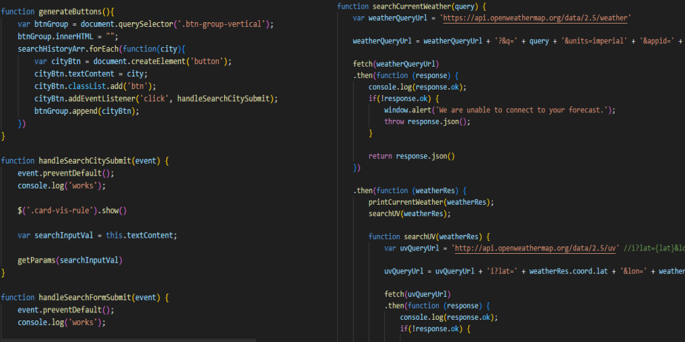

Weather Dashoard
Below is a Weather Dashboard Web Application I created which utilizes API calls to fetch weather data for any city that a user wishes to search in the search bar. Access the actual Webpage Application here: Sunny Skies Weather Dashboard
Dashboard Overview

User can enter a city into the search bar, and then see results for the weather for the week for the entered search criteria. Previous searches will also be saved in a list on the side of the page.
Diving Into the Code

From the code, there is intermediate to advanced functions and api calls showing my proficiency in the understanding of complex front end javascript concepts. If you wish to see the code access here via my github: Weather Dashboard Repository